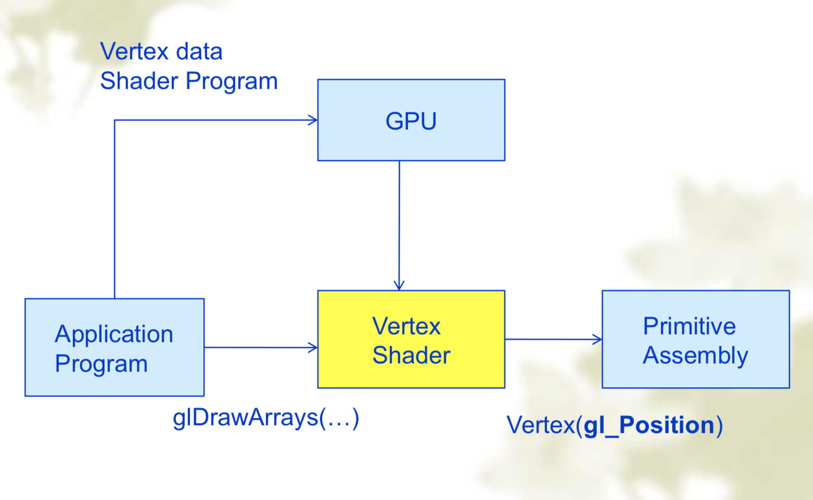
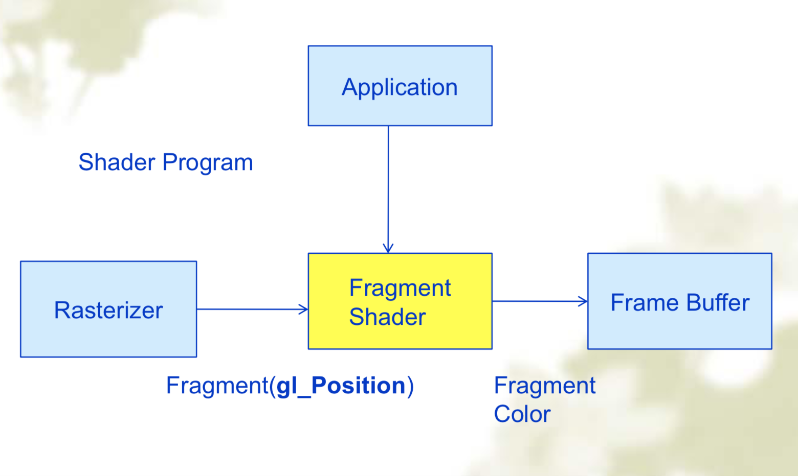

OpenGL学习笔记（三）第一个渲染程序
上一篇中简单介绍了渲染管线和FLEW、FreeGLUT库的安装，但示例程序仍是使用已经废止的glBegin和glEnd来实现的，这次将进行第一个真正的渲染程序的编写（毕竟将对管线的认知转到实际的代码中的体现，仍是需要示例来帮助的）。第一次计算机图形学课的实验，由于没弄清楚要求，以为侧重三D建模和图形旋转就参考了一个复杂的示例，结果就被检查的师兄提问到“失去理想”了（问各种参数和流程交互，嘤嘤嘤），此文也是为了弥补缺憾。
此文的代码来自传说中的红宝书[1]并参考老师课件，感谢[2][3][4]，帮助我解决了很多的碰到的问题。
OpenGL传统与现代的绘制方式
在OpenGL学习笔记（一）中，曾简单提到了核心模式（Core-Profile）与立即渲染模式（Immediate mode）这两个词，在开始编写渲染程序之前，有必要再次提到这两个词，并说明介绍一下OpenGL传统与现代的绘制方式，来帮助大家更清楚地了解使用渲染管线编程（自己在图形学课的第一次实验前，在两种方式上吃了很大的亏，弄了好多使用glBegin和glEnd的示例来看，结果发现不符合要求，蓝瘦）。
传统方式绘制
1. 立即渲染模式（Immediate Mode）
使用glBegin…glEnd的方式制定绘制方式，学习笔记（二）最后的示例就是通过这种方式绘制的，在OpenGL新版本中已被废弃。简单示例如下：
glBegin(GL_LINE_LOOP);//将以下点逐一连线
glVertex3d(a.x,a.y,a.z);
glVertex3d(b.x,b.y,b.z);
glVertex3d(c.x,c.y,c.z);
glVertex3d(d.x,d.y,d.z);
glEnd();2. 显示列表（Display List）
将一组OpenGL函数存储在一起，在以后执行，调用时，存储的函数会按顺序执行。示例如下：
//创建显示列表
displayListId = glGenLists(1);
glNewList(displayListId, GL_COMPILE);
glBegin(GL_TRIANGLES);
glVertex3f(-0.5, -0.5, 0.0);
glVertex3f(0.5, 0.0, 0.0);
glVertex3f(0.0, 0.5, 0.0);
glEnd();
glEndLIst();现代方式绘制
1. 顶点数组绘图
使用顶点数组方式，需要利用glEnableClientState开启一些特性。
使用顶点数组时，用户定义好存储顶点的数据，在调用glDrawArrays、glDrawElements之类的函数时，用过glVertexPointer设定的指针，传送数据到GPU。当调用完glDrawArrays后，GPU中已经有了绘图所需数据，用户可以释放数据空间。2
示例：
//利用顶点数组，绘制三角形
const int num_indices = 3;
//创建保存顶点的结构体数组
vec3f *vertices = new vec3f[num_indices];
// 顶点1
vertices[0].x = -0.5f;
vertices[0].y = -0.5f;
vertices[0].z = 0.0f;
// 顶点2
vertices[1].x = 0.5f;
vertices[1].y = 0.0f;
vertices[1].z = 0.0f;
//顶点3
vertices[2].x = 0.0f;
vertices[2].y = 0.5f;
vertices[2].z = 0.0f;
// 启用vertex arrays
glEnableClientState(GL_VERTEX_ARRAY);
//定义顶点数组
glVertexPointer(
3, // 每个顶点的维度
GL_FLOAT, // 顶点数据类型
0, // 连续顶点之间的间隙，这里为0
vertices //指向第一个顶点的第一个坐标的指针
);
glDrawArrays(GL_TRIANGLES, 0, num_indices);
glDisableClientState(GL_VERTEX_ARRAY);
//释放内存空间
delete[] vertices; 2. 现代VBO VAO绘图
VAO（Vertex Array Object），包含一个或多个VBO对象，被设计来存储一个完整被渲染对象所需的信息；VBO（Vertex Buffer Object），在高速视频卡中的内存缓冲，保存顶点数据以及归一化向量、纹理和索引等数据。
3. 结合Shader绘图
参考学习笔记（一）不做详细解释。
第一个渲染程序
仍是一个绘制三角形的程序吼。
环境准备
- 使用GLFW和FreeGLUT库（还是不行的，由于FreeGLUT在MAC上无法编译着色器代码，所以在此仍然使用Xcode自带的OpenGL.framework和GLUT.framework），创建项目和配置库不再做解释，有需要请参考前两篇学习笔记。
1. LoadShaders
包含一些宏定义，主要用于debug处理，红宝书提供的。
LoadShaders.hpp
#ifndef __LOAD_SHADERS_H__
#define __LOAD_SHADERS_H__
//#include
#include
#include
#include
#ifdef __cplusplus
extern "C" {
#endif // __cplusplus
typedef struct {
GLenum type;
const char* filename;
GLuint shader;
} ShaderInfo;
GLuint LoadShaders(ShaderInfo*);
//----------------------------------------------------------------------------
#ifdef __cplusplus
};
#endif // __cplusplus
#endif // __LOAD_SHADERS_H__ LoadShaers.cpp
代码过长，又不打算加以解释，所以放置在最后的代码附录中。
2. 着色器定义
triangle.vert 顶点着色器
- 代码
#version 400 core //版本号不能高于410，修改为400即可
layout( location = 0 ) in vec4 vPosition; //从main程序中输入，必须与应用中的变量关联
void
main()
{
gl_Position = vPosition;
}- 执行流程示意图

triangle.frag 片段着色器
- 代码
#version 400 core
out vec4 fColor; //输出颜色信息
void main()
{
fColor = vec4(0.5, 0.4, 0.8, 1.0); //设置vPosition位置的颜色
}
- 执行流程示意图

3. 主程序，main.cpp
头部
#include
using namespace std;
#include "LoadShaders.hpp" //其它的库头文件包含在“LoadShaders.hpp"中了
#pragma comment (lib, "glew32.lib")//存在无法解析外部符号d时的处理
enum VAO_IDs { Triangles, NumVAOs }; //VAO, Vertex Array Object
enum Buffer_IDs { ArrayBuffer, NumBuffers }; //着色器shader中的缓存
enum Attrib_IDs { vPosition = 0 }; //指定shader中的属性变量位置
GLuint VAOs[NumVAOs];
GLuint Buffers[NumBuffers];
const GLuint NumVertices = 6; init 初始
void init( void )
{
glGenVertexArrays( NumVAOs, VAOs ); //创建VAO
glBindVertexArray( VAOs[Triangles] ); //绑定所需的VAO
GLfloat vertices[NumVertices][2] = {
{ -0.90f, -0.90f }, { 0.85f, -0.90f }, { -0.90f, 0.85f }, // Triangle 1
{ 0.90f, -0.85f }, { 0.90f, 0.90f }, { -0.85f, 0.90f } // Triangle 2
};
//生成缓冲（对象数量，存储缓冲的数组），并在Buffers数组中返回n个缓冲对象的名称
glGenBuffers( NumBuffers, Buffers );
//指定当前活动缓冲区的对象（Glenum target, Gluint buffer）
glBindBuffer( GL_ARRAY_BUFFER, Buffers[ArrayBuffer] );
/*用数据分配和初始化缓冲区对象
target: GL_ARRAY_BUFFER（顶点数据），GL_ELEMENT_ARRAY_BUFFER（索引数据）
size: 存储相关数据所需的内存量
daata: 用于初始化的缓冲区对象，可以是指针，也可以是NULL
usage：数据在分配后如何进行读写，
GL_STATIC_DRAW，数据只指定1次，但可以多次作为绘图和图像指定h函数的源数据*/
glBufferData( GL_ARRAY_BUFFER, sizeof(vertices), vertices, GL_STATIC_DRAW);
ShaderInfo shaders[] =
{
{ GL_VERTEX_SHADER, "/Volumes/TOSHIBAEXT 1/CODE/Study/OpenGL/03/studyOpenGL0309/studyOpenGL0309/triangle.vert" },
{ GL_FRAGMENT_SHADER, "/Volumes/TOSHIBAEXT 1/CODE/Study/OpenGL/03/studyOpenGL0309/studyOpenGL0309/triangle.frag" },
{ GL_NONE, NULL }
};
//通过LoadShaders写好的内容，进行shader创建
GLuint program = LoadShaders( shaders );
//使用程序对象作为当前渲染的一部分
glUseProgram( program );
#define BUFFER_OFFSET(offset) ((void *)(offset))
/*指定渲染时索引值为index的顶点属性数组的数据格式和位置
Gluint index: 指定要修改的顶点属性的索引值
Glint size: 指定每个顶点属性的组建数量，必须为1、2、3或4，初始值为4
GLenum type: 指定数组中每个组件的数据类型
GLboolean normalized: 指定被访问时，固定点数据值被归一化（GL_TRUE),直接转换为固定值（GL_FALSE）
GLsizei stride: 指定连续顶点之间的偏移量。若为0，则是紧密排列在一起的，初始值为0
const GLvoid* pointer: 指定第一个组件在数组的第一个顶点属性中的偏移量，初始值为0*/
glVertexAttribPointer( vPosition, 2, GL_FLOAT,
GL_FALSE, 0, BUFFER_OFFSET(0) );
//默认情况下，出于性能考虑，所有顶点着色器的属性（Attribute）变量都是关闭的，意味着数据在着色器端是不可见的，哪怕数据已经上传到GPU，由glEnableVertexAttribArray启用指定属性，才可在顶点着色器中访问逐顶点的属性数据。glVertexAttribPointer或VBO只是建立CPU和GPU之间的逻辑连接，从而实现了CPU数据上传至GPU。但是，数据在GPU端是否可见，即，着色器能否读取到数据，由是否启用了对应的属性决定，这就是glEnableVertexAttribArray的功能，允许顶点着色器读取GPU（服务器端）数据。只要在绘图调用前调用即可
glEnableVertexAttribArray( vPosition );
}
display
void display(void)
{
// set the color when clear screen
glClearColor (0.2f, 0.2f, 0.4f, 1.0f);
/*清除指定的缓冲区
GL_COLOR_BUFFER_BIT: 当前可写的颜色缓冲
GL_DEPTH_BUFFER_BIT: 深度缓冲
GL_ACCUM_BUFFER_BIT: 累计缓冲
GL_STENCIL_BUFFER_BIT: 模版缓冲*/
glClear(GL_COLOR_BUFFER_BIT);
glBindVertexArray(VAOs[Triangles]);
/*绘制图形
GLenum mode: 绘制方式
GLint first: 从数组缓存中的哪一位开始绘制，一般为0
GLsizei count: 数组中顶点的数量*/
glDrawArrays(GL_TRIANGLES, 0, NumVertices);
//清空缓冲区，将指令送往缓硬件立即执行，但是它是将命令传送完毕之后立即返回，不会等待指令执行完毕。这些指令会在有限时间内执行完毕。使用glFlush的目的是确保在调用之后，CPU没有OpenGL相关的事情需要做-命令会送到硬件执行。调用glFinish的目的是确保当返回之后，没有相关工作留下需要继续做。
//glFlush();
//双缓存开启下使用glutSwapBuffers
glutSwapBuffers();
}main函数
int main(int argc, char** argv)
{
cout << "start init windows" << endl;
glutInit(&argc, argv); //初始化GLUT库，完成必须的初始化和开启事件处理循环
glutInitDisplayMode(GLUT_DOUBLE|GLUT_RGBA|GLUT_3_2_CORE_PROFILE); //设置初始显示模式
/* GLUT_3_2_CORE_PROFILE代替以下在FreeGLUT中的命令
glutInitContextVersion(4,3);//指定OpenGL版本
glutInitContextProfile(GLUT_CORE_PROFILE);//设置所需的OpenGL环境的类型*/
glutInitWindowPosition(300, 50);//初始窗口位置
glutInitWindowSize(512, 512); //设置窗口位置
glutCreateWindow("第一个渲染程序"); //创建一个顶级窗口，“第一个渲染程序"窗口名
cout << "init vertices" << endl;
init();
cout << "start display" << endl;
/*当窗口内容绘制、窗口大小改变、窗口重绘时调用mydisplay函数重绘
一般与glutReshapeFunc(&reshape), glutIdelFunc(&IdleFunc)同时出现*/
glutDisplayFunc(display);
glutMainLoop();
}
效果展示
- 嘤嘤嘤，终于成功了，感谢网上的大佬们的博客。
- 终于步入正轨了，在无法在Mac上进行编译的FreeGlut、误入传统绘图方法和各种错误上耗费了许多时间，总算成功了，哭。
参考
[1]: https://github.com/openglredbook “openGL RedBook Github”
2: https://www.cnblogs.com/caster99/p/4752354.html “OpenGL红宝书：第一个渲染程序Triangles常见问题归总 - caster99”
3: http://www.360doc.com/content/14/1028/10/19175681_420522404.shtml “OpenGL学习脚印：基本图形绘制方式比较（glBegin, glCallList, glVertexPointer, VBO）- 方海龙的书馆”
4: https://blog.csdn.net/chunyexiyu/article/details/89224004 “Mac上构建OpenGL红宝书上的triangles程序-春夜喜雨”
最后的LoadShaders.cpp
#include
#include
//#include
#include "LoadShaders.hpp"
#ifdef __cplusplus
extern "C" {
#endif // __cplusplus
//----------------------------------------------------------------------------
static const GLchar*
ReadShader( const char* filename )
{
#ifdef WIN32
FILE* infile;
fopen_s( &infile, filename, "rb" );
#else
FILE* infile = fopen( filename, "rb" );
#endif // WIN32
if ( !infile ) {
#ifdef _DEBUG
std::cerr << "Unable to open file '" << filename << "'" << std::endl;
#endif /* DEBUG */
return NULL;
}
fseek( infile, 0, SEEK_END );
int len = ftell( infile );
fseek( infile, 0, SEEK_SET );
GLchar* source = new GLchar[len+1];
fread( source, 1, len, infile );
fclose( infile );
source[len] = 0;
return const_cast(source);
}
//----------------------------------------------------------------------------
GLuint
LoadShaders(ShaderInfo* shaders)
{
if ( shaders == NULL ) { return 0; }
GLuint program = glCreateProgram();
ShaderInfo* entry = shaders;
while ( entry->type != GL_NONE ) {
GLuint shader = glCreateShader( entry->type );
entry->shader = shader;
const GLchar* source = ReadShader( entry->filename );
if ( source == NULL ) {
for ( entry = shaders; entry->type != GL_NONE; ++entry ) {
glDeleteShader( entry->shader );
entry->shader = 0;
}
return 0;
}
glShaderSource( shader, 1, &source, NULL );
delete [] source;
glCompileShader( shader );
GLint compiled;
glGetShaderiv( shader, GL_COMPILE_STATUS, &compiled );
if ( !compiled ) {
#ifdef _DEBUG
GLsizei len;
glGetShaderiv( shader, GL_INFO_LOG_LENGTH, &len );
GLchar* log = new GLchar[len+1];
glGetShaderInfoLog( shader, len, &len, log );
std::cerr << "Shader compilation failed: " << log << std::endl;
delete [] log;
#endif /* DEBUG */
return 0;
}
glAttachShader( program, shader );
++entry;
}
glLinkProgram( program );
GLint linked;
glGetProgramiv( program, GL_LINK_STATUS, &linked );
if ( !linked ) {
#ifdef _DEBUG
GLsizei len;
glGetProgramiv( program, GL_INFO_LOG_LENGTH, &len );
GLchar* log = new GLchar[len+1];
glGetProgramInfoLog( program, len, &len, log );
std::cerr << "Shader linking failed: " << log << std::endl;
delete [] log;
#endif /* DEBUG */
for ( entry = shaders; entry->type != GL_NONE; ++entry ) {
glDeleteShader( entry->shader );
entry->shader = 0;
}
return 0;
}
return program;
}
//----------------------------------------------------------------------------
#ifdef __cplusplus
}
#endif // __cplusplus